Xinix
Technology View
by @reekoheek
<void />
Congratulation
the beginning
renaissance era
today
arch-php
 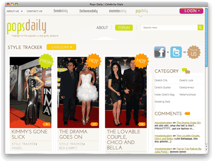
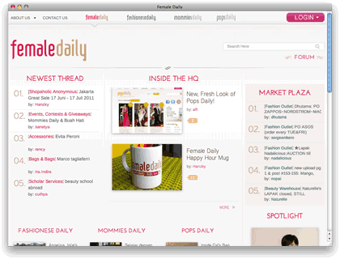
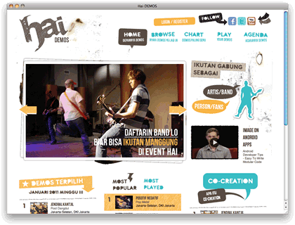
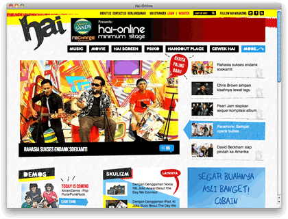
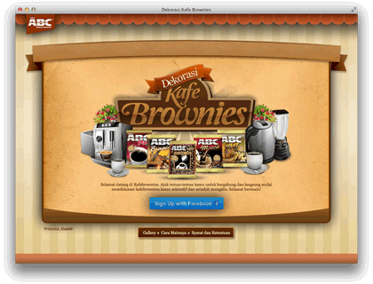
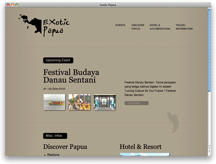
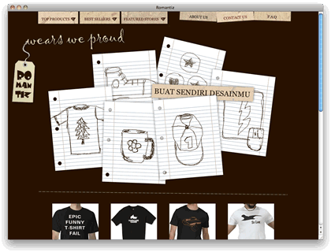
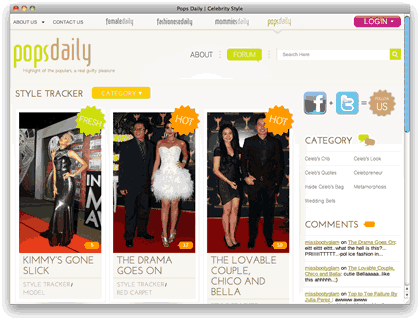
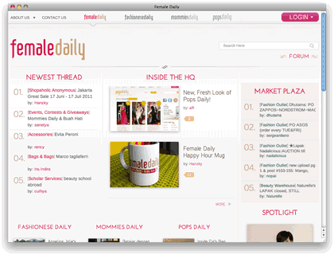
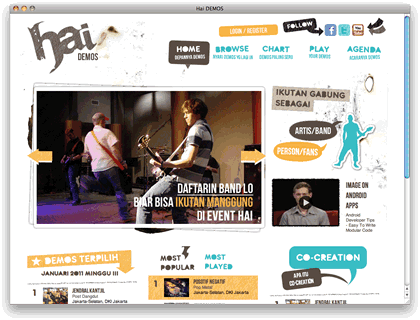
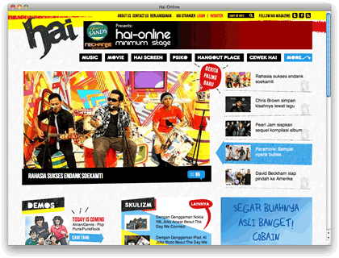
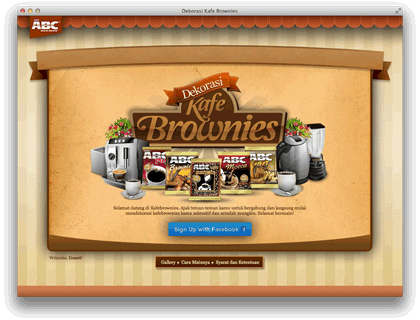
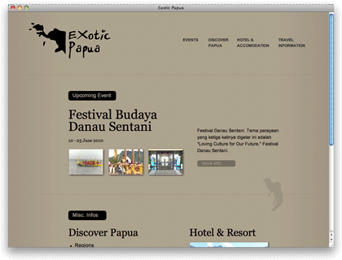
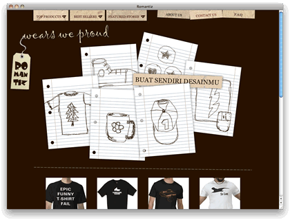
klien dan partner
Rapid Prototyping Scaffolding
Facebook + Twitter Integration
for programmers

soon will be opensource
Bono
X
Bono + Norm
Enterprise wise Modular NoSQL
+
All good things of arch-php
built for developers
to be loved by users

XIN
be a pro
build sophisticated webapp, android app, iphone app, ipad app, windows mobile app fast.
“First, solve the problem. Then, write the code.”
John Johnson